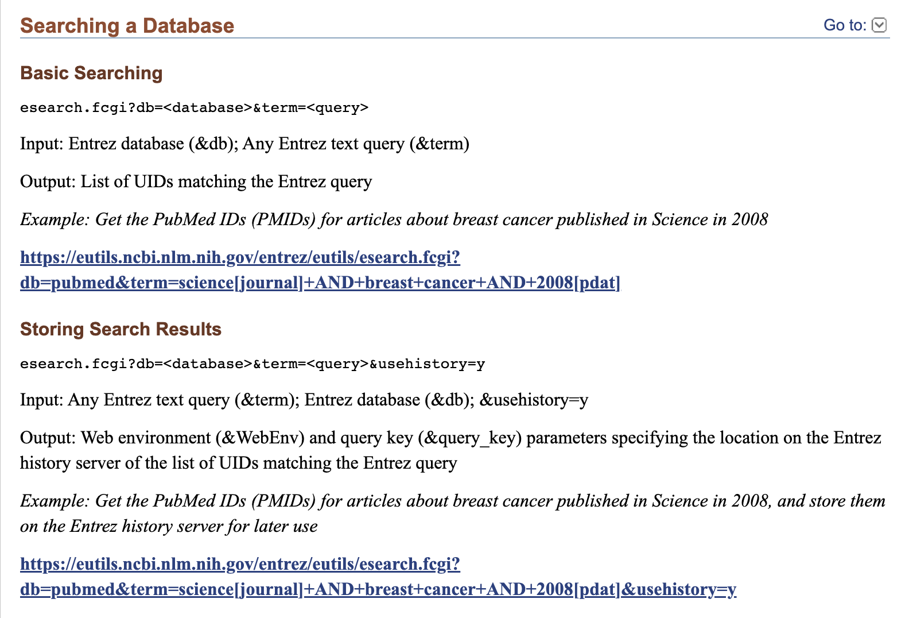
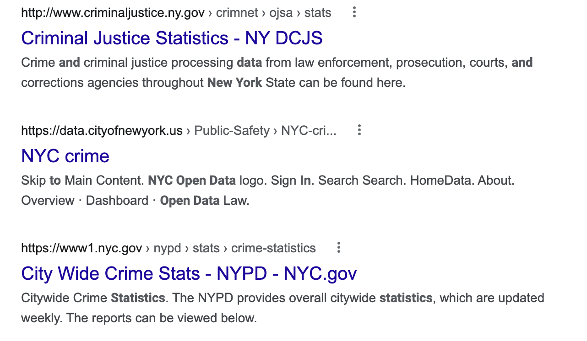
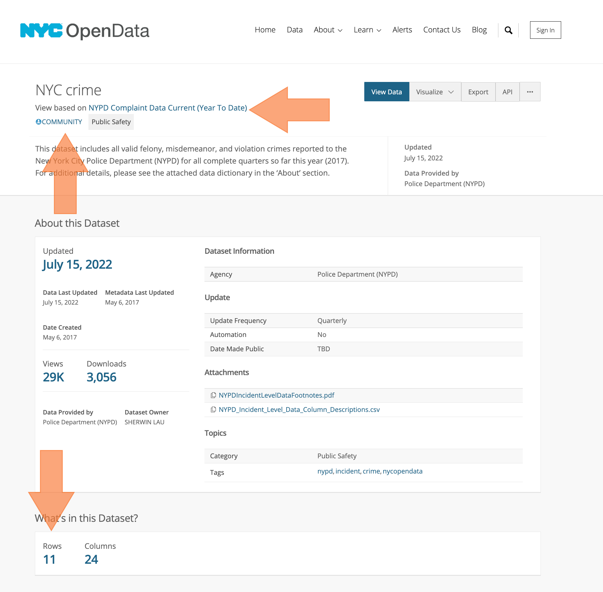
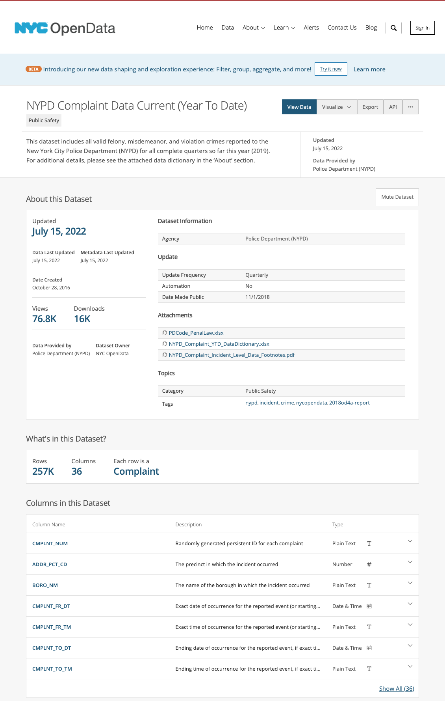
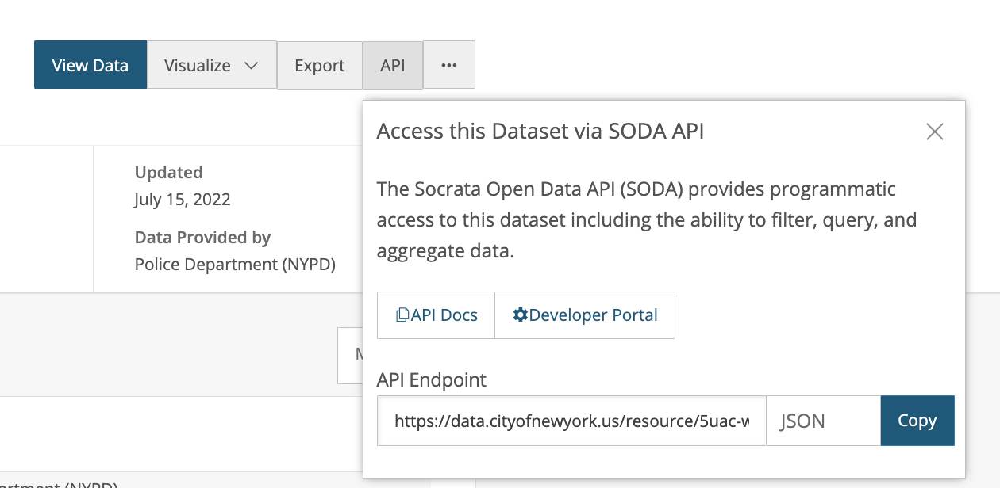
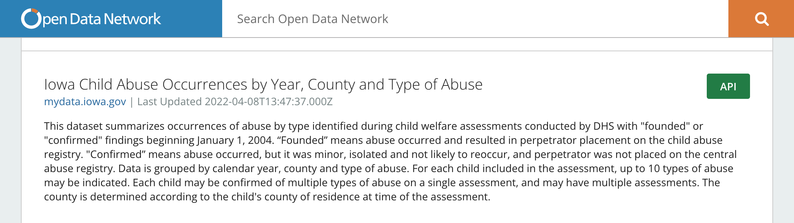
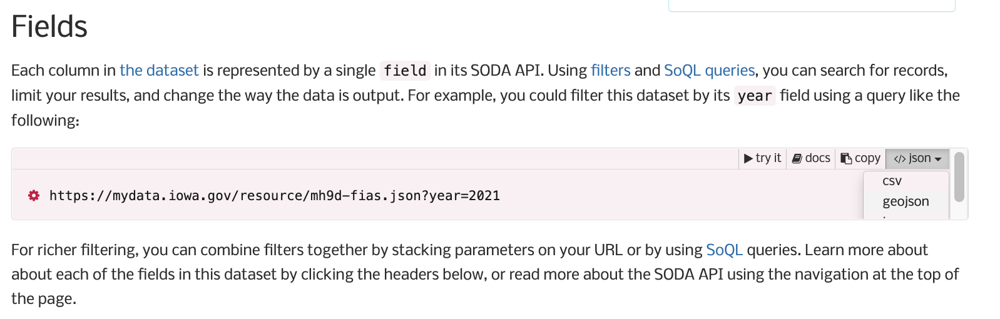

Using Public Data and Maps for Powerful Data Visualizations
Joy Payton
About This Session
What’s the Point?
These are the assumptions I am basing this workshop on:
- Geospatial data is useful to clinicians and biomed researchers
- Neighborhood data is useful to clinicians and biomed researchers
- Maps are great ways to share findings with all kinds of stakeholders
- You can do a geospatial project just in R
Itinerary
Please follow along at https://rpubs.com/pm0kjp/r_medicine_2022. I include links here you’ll want to click!
- Section 1: APIs
- Section 2: Socrata public data portals
- Break / Q&A
- Section 3: Maps and geospatial data
- Section 4: US Census Data
- Break / Q&A
- Section 5 (if time permits): Non-Socrata public data portals
- Q&A / Next Steps
About Your Instructor
Joy Payton (she/her) is…
- Data Scientist
- Data Educator (so I know a little about a lot)
- Research Reproducibility Advocate
- Census Nerd (first job after undergrad!)
- Map Fan
- Political Junkie

About Your Instructor
Joy Payton (she/her) is NOT …
- GIS Wizard
- Demographer
- Physician
- Statistician
You Can Reach Me…
- On LinkedIn (https://www.linkedin.com/in/joypayton/)
- By making an issue on the repo for this presentation (https://github.com/pm0kjp/r-medicine-2022/issues)
- By using my CHOP email address which is paytonk [at] CHOP [dot] edu
Section 1: APIs
What are APIs and why do they matter? We’ll be talking about the Census API, the SODA API, and other API endpoints in this session, so a short intro to APIs is in order.
First, a Bit of Setup
First, let’s start by having you clone the materials for the workshop to your own computer. When we start using APIs you’ll want this!
- Go to https://github.com/pm0kjp/r-medicine-2022/ and click on the green “Code” button to either:
- Clone the repository (if you already use git, you know how this works) or
- Download the zipped contents (if you’re not a git user)

First, a Bit of Setup
Once you have these files downloaded, you will notice the following file structure:
./
├── 📁 data
├── 📁 scripts
├── .gitattributes
├── .gitignore
└── README.mdPlease add a folder called private at the same level as data and scripts, so that it looks like this. You’ll add API keys, unique to you, to your own private directory.
./
├── 📁 data
├── 📁 private
├── 📁 scripts
├── .gitattributes
├── .gitignore
└── README.mdWhat is an API?
API stands for Application Programming Interface. It’s a way for people or computers to interact with software in a prescribed way. A common type of Web API is based on the REST architecture and are often referred to as “RESTful APIs”.
A RESTful API promotes a “resource-oriented” API where URLs (web addresses) map to objects or resources that you can then interact with (like .csvs of data).

Why Use an API?
Why use APIs? They provide a structured, consistent way to carry out a process so that it can be automated and standardized. An API provides consistency around a process.
APIs Mean Fresh Data!
While many data-centric applications allow you to download data by using a form submission or clicking on buttons that save data to your computer, that might not be the most useful way to work with data in an ongoing way.

The Alternative… is Awful
Instructions:
- Go to https://fake.site/data …
- Log in using the username:mike and password:mypassword
- Make sure you’ve checked the following boxes in the data request page: …
- Save the file with the following naming convention: …
- Store the file in the sharefile folder within the directory called …
URL Queries
Consider this URL:
https://www.amazon.com/s?k=r+for+data+science&crid=1CZ68952YCOJU&sprefix=r+for+data+sci%2Caps%2C143&ref=nb_sb_ss_i\_1_14You may have seen long URLs like this one, which have question marks, equals signs, and ampersands. These long query strings generally give specific data – in this case, I’m asking for a specific book title, which I left in lower case: “r for data science”. Let’s take a look at this specific query string:
?k=r+for+data+science&crid=1CZ68952YCOJU&sprefix=r+for+data+sci%2Caps%2C143&ref=nb_sb_ss_i_1_14Query Strings
?k=r+for+data+science&crid=1CZ68952YCOJU&sprefix=r+for+data+sci%2Caps%2C143&ref=nb_sb_ss_i_1_14These are the keys (variables, named data points) and values we see in the query string:
- “k”, which is equal to “r+for+data+science”
- “crid” (maybe my customer ID?): “1CZ68952YCOJU”
- “sprefix” (seems to reiterate the book title and a few other things): “r+for+data+sci%2Caps%2C143”
- “ref”, which may be some code about my search history or how I got to this page: “nb_sb_ss_i_1_14”
Query Strings
?k=r+for+data+science&crid=1CZ68952YCOJU&sprefix=r+for+data+sci%2Caps%2C143&ref=nb_sb_ss_i_1_14You’ll notice that a query string starts with a ? and is followed by key-value pairs with the format “key=value”. There are no spaces allowed, which is why URLs will use things like plus signs or %20 to indicate spaces. Between key-value pairs, we add an ampersand (&), and can string together many key-value pairs in this way.
Exercise
Go to the materials for this course, the stuff you downloaded from the repository. In scripts, open the pubmed_api_example.Rmd file. Pubmed allows anonymous use of its API (no API key required), within certain limits.
Can’t / don’t want to do this code right now? Check out the rendered version at https://rpubs.com/pm0kjp/pubmed_api_example
Section 2: Public Data Portals
In this section we’ll delve a bit more into API usage, and give you some tips for navigating public data portals (by data portal here I mean a well designed website whose purpose is to give access to downloadable data using easy methods).
Public Data Portal
The easiest way to find public data that’s relevant to you is to search for “Open Data” plus your search term, and look for sites that have “data” in the URL or name.
For example, let’s search for “open data gun violence new york city”. A few results show up:
Public Data Portal
The first site has NYC gun violence data in the form of tables inside a pdf (not that helpful for us). The second site, which has “data” in the URL, is much more promising…
NYC Open Data
NYC Open Data is a particularly good open data resource. Still, it’s not perfect! The NYC Crime dataset is a very small dataset of only 11 rows! Hmmmm….

NYC Open Data
That small view stated that it comes from a much larger dataset, the misnamed “NYPD Complaint Data Current (Year to Date)” which actually has crime data from 2019 forward.

NYC Open Data
Let’s take a peek at the API button. This data is hosted in a Socrata-powered data portal, and uses the Socrata Open Data API, or SODA.

Socrata API
Because the Socrata Open Data API (SODA) is consistent across the many public data sources that employ it, we can learn some of the basic use cases once and be well-equipped to use the same methods in multiple places.
The Socrata Open Data API (SODA) uses URL query strings (also known as URL queries or URL parameters) to pass the data portal the details about what data you want.
Exercise
Let’s look at Socrata’s list of data portals. Find one that’s interesting to you!
Visit https://dev.socrata.com/data/ and search for your region or area of interest. Then, when you find a likely dataset, click the API button to see more information about your dataset. Look at the columns – for our purposes today, you want to see some sort of geography, like the names of counties, geo-ids, fips codes, census tract identifiers, etc.

Exercise
You may be presented interesting tips about how to work with SODA,
For example, here we read about SODA’s “Simple Filter” functionality, which provides very coarse-grained control that allows you to control what you import based on column name.
Check in the pink endpoint box in the upper right for the file types that are available. When you click there, you want to see, ideally, csv and geojson as options.

Exercise
If you don’t yet have a dataset you want to work with, please go to https://data.cityofnewyork.us/Public-Safety/NYC-crime/qb7u-rbmr, find the API button and give it a click.
If you have a dataset you want to work with, we’ll use that API endpoint instead.
Quick Map and Break
Without explaining how things work, let’s do a quick map of your data so you have an easy(-ish) win right away.
Open scripts/simple_maps_from_socrata.Rmd. Follow the instructions and feel free to surge ahead while I work with anyone having issues. This will lead into your break so do as little or as much as you want as far as riffing, trying new options, etc.
Rendered version available at https://rpubs.com/pm0kjp/simple_maps_from_socrata
Section 3: Maps and Geospatial Data
In this section, we’re going to talk about several topics:
- Maps as a data visualization idiom
- Geospatial data formats and files
- Mapping with Leaflet
Map as Idiom: Example 1
What do you see in this reconstruction of a 12th century data visualization?

al-Idrisi’s Tabula Rogeriana (Kitab Rujar)
Map as Idiom: Example 2

modern map of Okinawa
Elements of Maps
| Shapes | Colors | Sizes | Language |
|---|---|---|---|
|
|
|
|
Map Files
- GeoJSON (IETF Standard) https://tools.ietf.org/html/rfc7946 (usually one file)
- Shapefile (ESRI standard) https://www.esri.com/library/whitepapers/pdfs/shapefile.pdf (usually multiple files in a .zip)
Along with many folks (see, e.g. http://switchfromshapefile.org/) , I believe that geoJSON is a better format than Shapefile (but…)
But Wait, There’s More!
There are other geospatial data types with smaller market share:
What’s inside?
Let’s look inside Shapefiles and GeoJSON… we’ll look inside the raw files and then we’ll use RGDAL (the R version of the Geographic Data Abstraction Library) to transform the files.
Exercise
Please open scripts/opening_map_files.Rmd. We’ll go through this together!
Section 4: US Census Data

Decennial Census
The US Census Bureau is bound by the Constitution to do a full (not sampled) census of all people within the US every ten years. This determines the number of seats in the US House of Representatives and are used to draw district boundaries. This is the Decennial Census.
American Community Survey
In addition to the full population census, the Census Bureau is also responsible for conducting the American Community Survey (ACS) which uses sampling and inferential statistics to make estimates of social factors that affect your patients and research subjects… neighborhood characteristics like:
- Education levels, demographic characteristics
- Poverty rates, mean and median income
- Computer usage, housing characteristics
- Crime, commuting, and much more!
Versions of the ACS
Note that the ACS also has one and five year versions. Five year ACS data includes estimates for the entire country, while one year versions concentrate on population-dense areas and have smaller sample sizes.
Other Census Work
There are additional censuses performed by the Census Bureau that we won’t talk about, such as an Economic Census done every five years and the Census of Governments done every five years.
Geographies
Census data is collected at and aggregated to various levels:
- The country as a whole
- States / territories
- Counties
- ZIP Code Tabulation Areas (approximations of ZIP Codes)
- Urban areas
- Census Tracts (1-8k people)
- Census Block Groups
- Census Blocks (600 - 3k people)
- and probably more I’ve forgotten about!
Census Website
The website of the Census Bureau (https://www.census.gov) is a veritable treasure trove of information about what’s available and how to use Census data.
You can obtain data and download it in the Census Data browser at https://data.census.gov/. The tables you will find here are optimized for human readability, not always for processing via script.
Exercise
Let’s take a look at these two websites. Delve in to what’s available. How would this data be useful for you in your clinical practice or research?
API Overview
This is what the Census Bureau says about API usage:
Any user may query small quantities of data with minimal restrictions (up to 50 variables in a single query, and up to 500 queries per IP address per day). However, more than 500 queries per IP address per day requires that you register for an API key.
Getting an API Key
From the same source:
Once you have an API key, you can extract information from Census Bureau data sets using a variety of tools including JSON, R, Python, or even by typing a query string into the URL of a Web browser.
Exercise
The Census Bureau offers free API credentials at https://api.census.gov/data/key_signup.html
Do that now.
We’ll wait.
No, really, do that now, that way you can work on the practical sections!
API Endpoints
Check out their list of API endpoints.
tidycensus is a package that helps you work with specific APIs offered by the Census Bureau.
Documentation
Great documentation in the ACS API Handbook

FIPS
“FIPS” stands for “Federal Information Processing Standards”.
There are FIPS codes for states, counties, tracts, and blocks, and when concatenated, they end up being a single geographic id. Tracts and blocks can and will change from census to census!
FIPS Example
For example, FIPS state code for Pennsylvania is 42, the county code for Philadelphia is 101, and the census tract within Philadelphia where the University City campus of the Children’s Hospital of Philadelphia stands is 036901.
The last two digits can be thought of as ‘after the decimal point’, so this has a “human” name of Census Tract 369.01.
The block group for the hospital is 4, and the full block number is 4002, so you might be using a “GEOID” of 421010369014002 (if the block is included), or just 42101036901 (if you have tract level data only).
Granularity of Data
Census data is very very specific. If, for example, you’re interested in income data for a given tract, you might find columns that include descriptions like:
- INCOME AND BENEFITS (IN 2020 INFLATION-ADJUSTED DOLLARS) - Total households - Less than $10,000
- INCOME AND BENEFITS (IN 2020 INFLATION-ADJUSTED DOLLARS) - Total households - $10,000 to $14,999
- INCOME AND BENEFITS (IN 2020 INFLATION-ADJUSTED DOLLARS) - Total households - $15,000 to $24,999
- INCOME AND BENEFITS (IN 2020 INFLATION-ADJUSTED DOLLARS) - Total households - $25,000 to $34,999
- … and so on ..
Granularity of Data
Or:
- INCOME AND BENEFITS (IN 2020 INFLATION-ADJUSTED DOLLARS) - Families - Less than $10,000
- INCOME AND BENEFITS (IN 2020 INFLATION-ADJUSTED DOLLARS) - Families - $10,000 to $14,999
- … and so on …
Granularity of Data
Or:
- INCOME AND BENEFITS (IN 2020 INFLATION-ADJUSTED DOLLARS) - With Supplemental Security Income - Mean Supplemental Security Income (dollars)
- INCOME AND BENEFITS (IN 2020 INFLATION-ADJUSTED DOLLARS) - With cash public assistance income - Mean cash public assistance income (dollars)
- … and so on…
Granularity of Data
Or:
- INCOME AND BENEFITS (IN 2020 INFLATION-ADJUSTED DOLLARS) - Median earnings for workers (dollars)
- INCOME AND BENEFITS (IN 2020 INFLATION-ADJUSTED DOLLARS) - Median earnings for male full-time, year-round workers (dollars)
- INCOME AND BENEFITS (IN 2020 INFLATION-ADJUSTED DOLLARS) - Median earnings for female full-time, year-round workers (dollars)
Granularity of Data
You will likely need to do a bit of honing your question: families only, or all households (say, a single person, or a group home)? Do you want to look at statistics across the board or specify race, sex, or hispanicity? What is considered income, and what benefits? Do you want to include SSI? Measure it separately? What about welfare?
Estimates and MOEs
You’ll also find, for any given measure, a few variables related to it:
- Estimate – used when a scalar count or value is needed, like median income or number of white women
- Margin of error – used to indicate the precision of the estimate
- Percent – used when a percent is needed, like percent of families below the poverty line
- Percent Margin of Error – used to indicate the precision of the percent estimate
Note that all four columns are generally present although only two make sense for any given measure!
Sparsity
Every area of the US belongs to a census tract, even if it’s an area in which people don’t normally live (like a park or lake or airport). That’s why you might see census tracts with little to no data.
Exercise
Time to play with data! But first, check your email, then go to the materials for this course, the stuff you downloaded from the repository.
- Find the email with your Census API key
- Add that to a new text file (you can make a new text file in RStudio or any text editor)
- Save it in the
/privatedirectory you created earlier, ascensus_api_key.txt
Exercise
Now that you’ve stored your API key…
Go to the materials for this course, the stuff you downloaded from the repository. Open /scripts/census_data.Rmd. Rendered at https://rpubs.com/pm0kjp/census_data.
(Feeling fancy? It might be a good idea to start a Project using the top level directory as the location…)
Exercise
You probably have to install some things. RStudio may have already alerted you to this. Alternatively, uncomment and run line 15 of census_data.Rmd. You can skip most of the verbiage in the next few sections, it’s the stuff I’ve already explained.
Don’t want to / can’t run the code right now but don’t want to miss out? Here’s the knitted version: https://rpubs.com/pm0kjp/census_data
Section 5: Other Data Portals
Only if time permits: consider https://www.opendataphilly.org/ . It’s not a Socrata-powered portal. However, it’s easy enough to figure out what the endpoints are for downloading data if you click around enough.
Exercise
In https://www.opendataphilly.org/ or your non-Socrata data portal of choice, find a data endpoint you’re interested in. How can you figure out a download link that looks like an API call (the URL will refer to a specific resource, perhaps with a query string)?
Try to download and work with this file in a new R Markdown file.